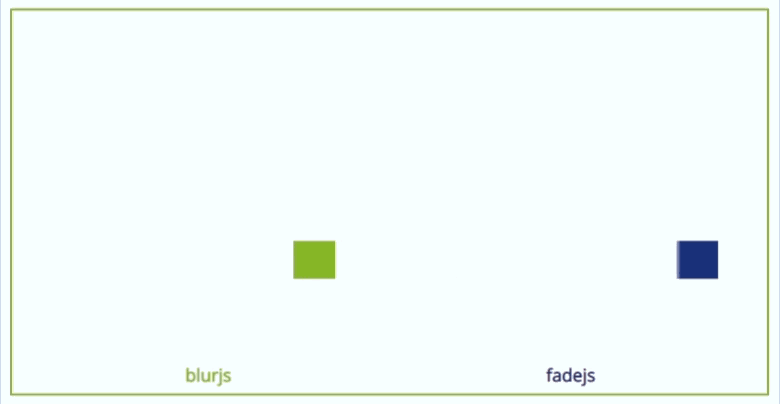

MotionBlurJS
Getting Started
Examples
What is MotionBlurJS
MotionBlurJS is a lightweight JavaScript library that allows your animations to shine with homemade native CSS Motion Blur and Motion Fade while keeping your code clean and your CSS animations smooth.The simple method
You can use MotionBlurJS by simply linking to it in your document head tag like so:<head>
<script src="https://adir-sl.github.io/MotionBlurJS/blur.js"></script>
</head>
After that, all you have to do is naming the class of the div you want to blur to either the blurjs or fadejs class, you can mix it with your current classes as well by separating those with spaces, like so:
<div id="yourId" class="someClass blurjs"></div>or
<div id="yourId" class="fadejs someClass"></div>
blurjs
fadejs
Maintatining opacity with fadejs
If your elements require opacity (alpha channel), you can achieve that with fadejs by adding the fadejs-data property to your animated elements, like so:<div id="yourId" class="fadejs someClass" fadejs-data="opacity: 0.6;"></div>Note that in this example the opacity will be 60% but the syntax is between 0-1 (like CSS).
The dynamic method
The dynamic method requires the same script linking as the simple method shown above.This method will allow you to dynamically blur the objects even if they won’t load with the page itself, to achieve this just add this img tag inside the div you want to blur, like so:
<div id="yourId" class="someClass">
<img src="" onerror="blurMe(event);" style="display:none !important;" />
</div>
or
<div id="yourId" class="someClass">
<img src="" onerror="fadeMe(event);" style="display:none !important;" />
</div>
blurMe(event);
fadeMe(event);
The SVG method
This method can add motion blur to SVG elements and .SVG files, by simply linking to it first thing inside the svg tag, like so:<svg ...>
<script xlink:href = "https://adir-sl.github.io/MotionBlurJS/blurSVG.js" />
...
</svg>
After that, all you have to do is naming the class of the element you want to blur to either the blurjs or fadejs class, you can mix it with your current classes as well by separating those with spaces, like so:
<circle id="yourId" class="st0 blurjs" cx="200" cy="200" r="42" />or
<circle id="yourId" class="st0 fadejs" cx="200" cy="200" r="42" />

How does it work
MotionBlurJS will duplicate your objects so they can get blurred or faded on runtime, the DOM will only show the necessary objects (no pesky img tags) in order for it to work properly the blurred object has to be positioned absolutely and to be animated with CSS animationBug report
This code is under active development, if you experience any bugs or kinks, feel free to report those through Github or by mail: motionblurjs@gmail.com please mention which method you were using and if possible, send me your code snippets,Happy coding !